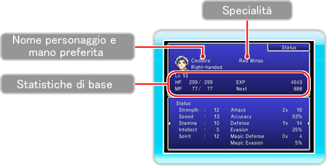

Strength
(Forza)
|
Determina la potenza degli attacchi fisici.
|
Speed
(Rapidità)
|
Determina la velocità delle azioni in battaglia.
|
Stamina
|
Determina gli HP totali.
|
Intellect
(Acume)
|
Determina la potenza della magia nera (Black Magic) e delle invocazioni (Summon).
|
Spirit
(Spirito)
|
Determina la potenza della magia bianca (White Magic).
|
Attack
(Attacco)
|
Il numero di volte che il personaggio può colpire con un attacco fisico e la potenza di ogni attacco.
|
Accuracy
(Mira)
|
La probabilità che gli attacchi del personaggio vadano a segno.
|
Defense
(Difesa)
|
Il numero di volte che il personaggio può evitare gli attacchi fisici nemici (più alto è questo valore, meno volte il nemico colpirà il personaggio con un attacco fisico) e la capacità del personaggio di resistere ai danni.
|
Evasion
(Destrezza)
|
La probabilità che il personaggio schivi gli attacchi fisici nemici.
|
Magic Defense
(Difesa magica)
|
Il numero di volte che il personaggio può evitare gli attacchi magici nemici (più alto è questo valore, meno volte il nemico colpirà il personaggio con un attacco magico) e la capacità del personaggio di resistere ai danni magici.
|
Magic Evasion
(Destrezza magica)
|
La probabilità che il personaggio schivi gli attacchi magici nemici.
|